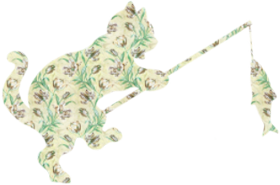

-
Web Technologies HTML,CSS & Javascript
 What is web technologies? -Web Technologies is one of the subjects taught to 7th semester A section students, just like any other subject.
What is web technologies? -Web Technologies is one of the subjects taught to 7th semester A section students, just like any other subject.
How is it different from other subjects? -This subjects is different as it is the only one where students actually paid attention to the lectures (most of the times).

Why did everyone paid attention to it? -Because of this very special class teacher 7A was blessed with, Ms Anjana Sharma, who made it all so easy that it started to seem interesting.
Web Technologies A book we never read
-
Dear ma'am I know we have not been in conversation a lot because of my extra presence in class but still I would like to tell you that the first month of the semester has been a really great time with you. All the jokes which you used to crack in the class and the amount of free time which you have given to us has not been given to us by anyone else.
Since I had missed most of your classes but still the motivation which you give me for studies and specially the threat for clearing your subject will always be remembered and I promise you that I will clear it. The only sad part is once we started having conversations then I realised that it was already the time for you to leave us and go but still ma'am you will always be one of the most sweetest faculties that I have ever met.
Please don't forget us and be in touch with us because all the fun which we missed in classes have to be compensated by some other means now. I don't have anything more to tell because I wasn't present in your class to make memories but still I don't know why there has been an emotional attachment with you because of your constant motivation and support for me. Thank you so much for everything ma'am 😊
KUNWAR SHAURYA KESHAV The CR
-
Madam thank you for teaching me was a great honour and good class teacher. Gonna miss you madam good luck and all the best -Anirban
Thank you ma'am for being so friendly and nice to all of us and best of luck for the future. -Asif Thank you for making it all simple and for accepting my mini project the way it is. All the best ma'am. -Manthan
Thank you for asking all the questions from the back benchers. -The entire first bench
The First Bench: Ever so silent
-
Chaithanya Devi‘s Notes
Dear Ma'am...
For the very first time I got an opportunity to write a letter to my teacher to convey my thoughts. And I am feeling very happy to write my first letter to you. Ma'am when I saw you for the first time in 3rd sem, I felt that you are strict though you didn't teach me.Later in 6th sem, my friends were telling that you are such a caring person and friendly to everyone. But I got an opportunity to travel with you in 7th sem.
Ma'am I really felt that motherhood from you and you are such a caring person... though I was less interacting with you... I am blessed to travel my 7th semester with you ma'am... Thank you so much
BEST OF LUCK MA'AM
Your second bench student Chaithanya Devi K ☺Chaithanya Devi‘s Notes
-
Fantastic 5 (Monisha‘s) Group
Bidding farewell is the most difficult thing to say to the best teacher ever known. From the most naughtiest and talkative girls bench of the class..we would like to make this moment more special by conveying our warm and heart felt wishes....
Though being taught by you for one semester..we bonded well and it felt like being a part of an amazing family. Apart from your teaching...we admire u for your awesome dressing sense...(with matching stuffs)it makes u look young and lively... Wishing you good health and successful life hereafter..
You are the most reliable and the coolest teacher we have ever known. We will surely miss you, and your “jokes”. Thank you for everything With love
- Monisha,Megha (the most talkative girls)
-Afshiya,Ayushi ,kavya (the silent girls)❤Holden Catfield is a seventeen-year-old dropout who has just been kicked out of his fourth school. Navigating his way through the challenges of growing up, Holden dissects the 'phony' aspects of society.
Fantastic 5 (Monisha‘s) Group
-
The BADISH (Akshaya‘s) Group
Ma'am Maybe we dint laugh at every joke you cracked in class or respond to ans every question you asked.. But we hav always loved and enjoyed ur classes They have been the only classes our benches concentrated in this sem Will miss you❤
Ma'am other than enjoying your teaching we have also learnt that it's imp to have the right work life balance.. You always made sure we took breaks while studying and had fun.. It was the best way to learn a subject and also.. Listening to your stories abt ur family and frnds helped create a special bond between us other than just a student teacher relationship..
Its always been easy with you ma'am whether it was postponing an internal or asking another faculty to postponed. Having ur support was the biggest advantage.. We will truly miss you and your stories ma'am
-Akshaya,Ishita,Swetha,
Harshini,Divya,BhargaviIts always been easy with you ma'am whether it was postponing an internal or asking another faculty to postponed. Having ur support was the biggest advantage.. We will truly miss you and your stories ma'am
The BADISH (Akshaya‘s) Group
-
Namratha‘s Shayari
GhumNami ke Andhere mein tha
pehchaan Banaya apne
Duniya ke Gham se Mujhe
Anjaan Banaya apne
Diye ke Tarah jalkar
jeevan ko Roshan karte hai Aap
Kuch Iss tarah apna
Farz Nibhathe hai Aap
Diya hai har samay Apna sahara
jab bhi mujhe laga main hara
Guru ka Mehatv kabhi na ho kam
Bhale karle kitni bhi unnathi hum
Mata ne di jeevan
pita ne di suraksha ki kavach
lekin jeevan main sachi Manavtha
bhare shikshak
satya Nyay ke pat par chalna sikaye Aap
jeevan Sangharsh se ladna sikaye Aap
Akshar akshar, shabdh shadh Ka Arth Bathakar
kabhi pyaar se kabhi Dant se
jeevan jeena sikaye Aap
Humara Margdarshak banke
Humein Prerith karne aur
Humein woh Bana ne ke liye
jo ki hum Aaj hai
Hey shikshak apko humara
koti koti pranaam
koti koti pranaam !!Its always been easy with you ma'am whether it was postponing an internal or asking another faculty to postponed. Having ur support was the biggest advantage.. We will truly miss you and your stories ma'am
Namratha‘s Shayari
-
The Vineeth‘s Gang
We’ll miss you as our teacher, but we’ll miss you more as our mentor, friend, and nurturer. Thank you for not thrashing me.
- Vineeth
We all just wanna say thank you for being so chill with us and giving us the best time when we're about to end this part of our life :)
Ps: Google pay 100 bucks for my effort, rangoli also works.-MaqdoomA friend is some one who understands you and someone can depend on thank you for not only being our teacher but our friend,-Karan(Tiger) How lucky are we to have someone that makes us saying Goodbye so hard. Thankyou for tolerating and supporting us. -Nandu S Kumar
'Your contribution in our lives has been exactly like the kind of teacher you are – special and priceless' -Akhil The only class I looked forward to in college and got 20+ marks in internals only because you ma'am, I wish to thank you for that -Akash (Innocent Boi)
Tyrant, blackmailer, racketeer, murderer - his influence reaches every level of American society. Meet Cat Corleone, a friendly cat, a just cat, a reasonable cat. The deadliest lord of the Cata Nostra. The Catfather.
The Vineeth‘s Gang
-
Vineeth‘s Gang Returns
Learning under this atmosphere will never be the same without a teacher like you. I hope that your new place is full of fun and happiness as usual. Farewell and thank you for being my inspiration!-Anand There’s no one quite like a special teacher, and no teacher quite as special as you. Thank you for everything, you will remain in our shining future, goodbye. -Edwin
Students by the end of 6th sem: "Attending classes can never be fun"
Anjana Ma'am: "Hold my Laser Pointer while I prove these kids wrong!"
We can't thank you enough for treating us as more than just students. Best of Luck for everything that lies ahead, you will be missed a lot ma'am :) -NasirTeachers come and go but their memories are forever the lessons that they teach are forgotten never, Teachers keep changing every now and then but great ones are remembered time and again, Farewell.
PS: Javascript > Python
(I agree to it!) -KarthikIts always been easy with you ma'am whether it was postponing an internal or asking another faculty to postponed. Having ur support was the biggest advantage.. We will truly miss you and your stories ma'am
Vineeth‘s Gang VOL II Gang returns
-
Wishing you joy and happiness. I am deeply thankful to you. Have a wonderful life ahead!
Note: ma’am please be lenient to students while writing internals 😅😅-Varun Kumar ReddyDear Anjana ma'am… we may forget most of the things you taught us from the textbooks, but we’ll forever remember everything that you said from the heart. Farewell.-Kalyan
Thank you for letting us sleep and stay at the last bench-The entire last bench
The Last Benchers
-
-Varun Kumar Reddy
Dear Anjana ma'am… we may forget most of the things you taught us from the textbooks, but we’ll forever remember everything that you said from the heart. Farewell.-Kalyan
Thank you for letting us sleep and stay at the last bench-The entire last bench
ThankYou From 7A batch of 2020